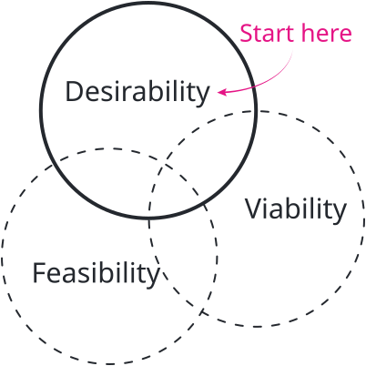
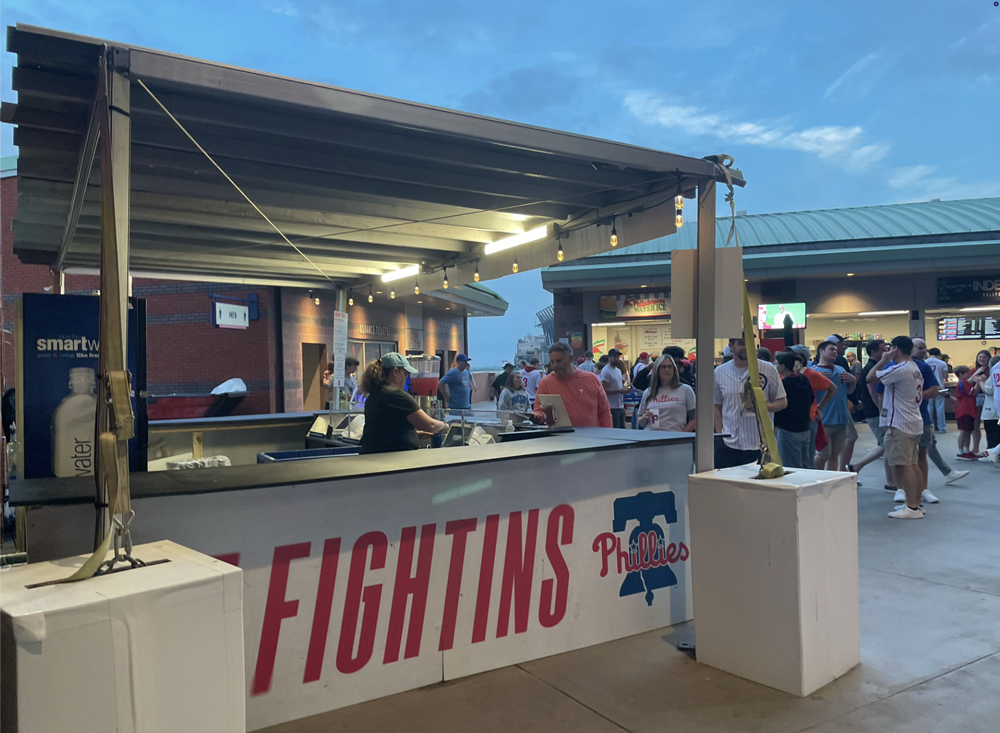
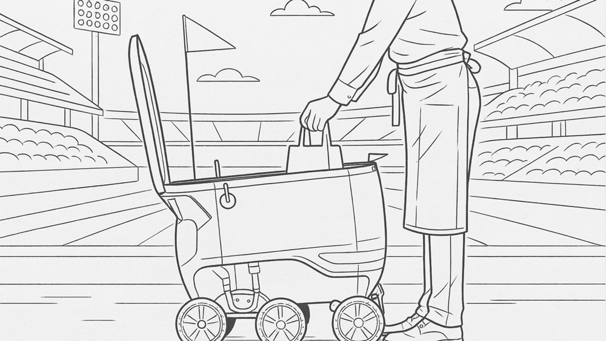
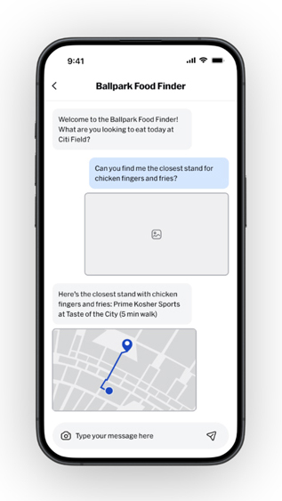
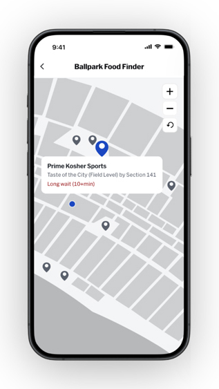
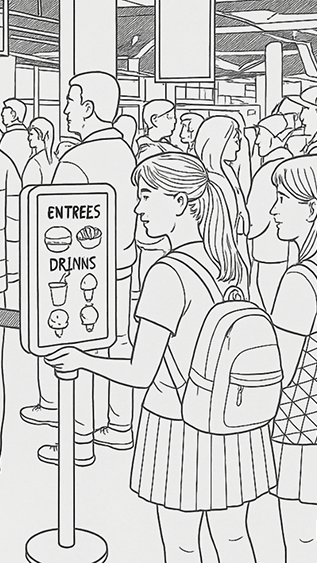
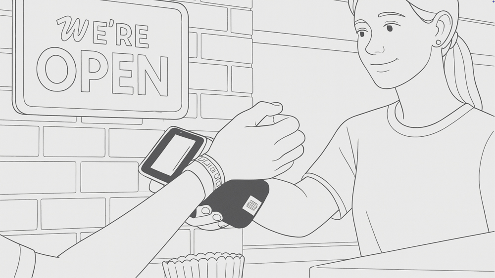
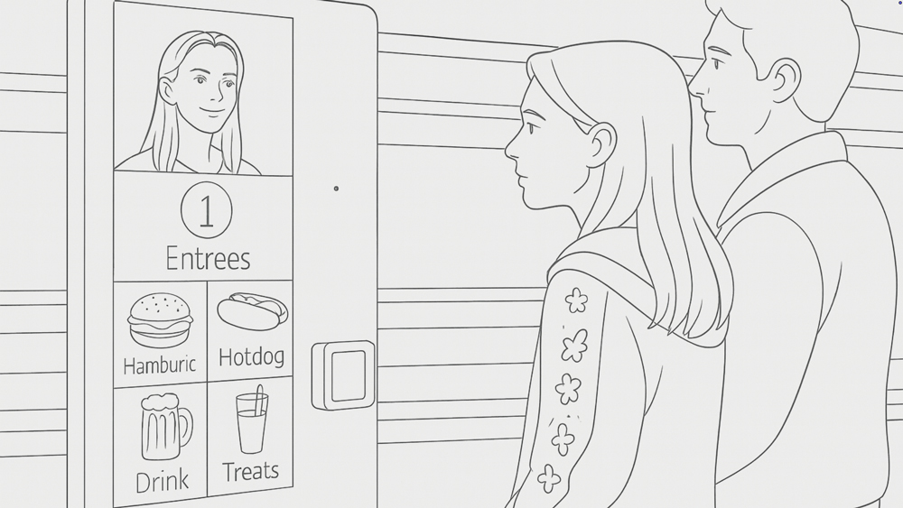
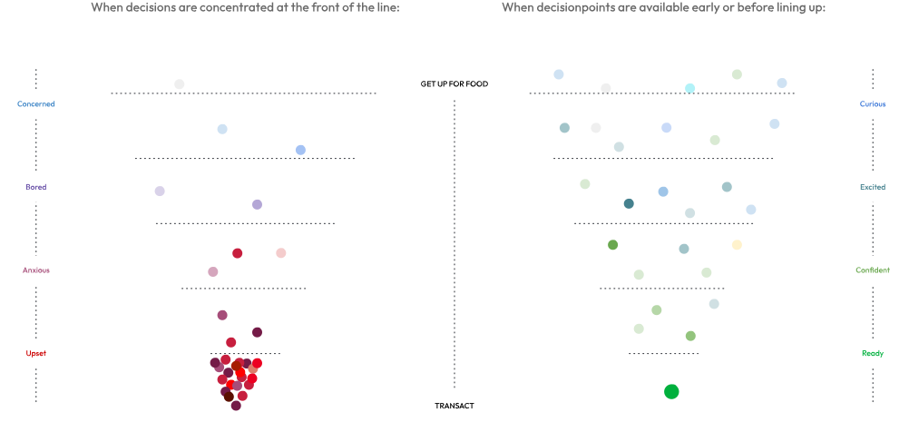

Ethnographic research revealing how cognitive load and social dynamics suppress spending at the ballpark.
MLB wanted to figure out how to improve the commerce experience at baseball games so fans would buy more premium options and more often.
1. Spending is suppressed by cognitive load, attention limits, and social dynamics.
2. The key moments fans fear missing are in their social group, not the game.
To start, I ran a series of surveys to identify the aspects of the venue experience that make attending games feel uniquely like baseball. This confirmed that food and beverages were the elements most critically linked to the experience, then I dug into fans' experiences when buying F&B at games to understand the highs and lows.
This led to an insight that all fans bring two specific mindsets into ballparks, which are Researching (logistical) and Ritualizing (emotional). From here I knew where to dig deeper during field research.

I went out to ballparks around the country to study how people operate when they are trying to get food.
Using behavioral observation, intercept interviews, and contextual inquiry, I uncovered how the concourse and the individual stands determine fan behavior, as well as which contexts have bearing on the dining and purchasing decisions fans make.
Once I had some hypotheses of what was influencing fans, I had conversations with them while they were making trips to and from the food stands to pressure-test the hypotheses. They told me how they feel about the concourse experience and why it impacts their behaviors the way it does.

Back at MLB HQ, I ran a series of workshops with designers and managers from the product team to develop sacrificial concepts exploring the problems identified in the research. These concepts ranged from new stand designs to mobile app features to completely new services, and from simple to major initiatives.






To conclude the research phase, I interviewed fans across the US and Canada about their experiences with the problems found in the field, digging into the causes and how those fans respond. We also analyzed the sacrificial concepts and compared them to analogous experiences in other industries to find out which ones were compelling, and what the team may not have considered when crafting them.
 Mapping actions by Mindset vs Behavior Mode
Mapping actions by Mindset vs Behavior Mode
Synthesis: What would make for a better commerce experience?
Insights1. All fans bring two specific mindsets to the game (Researching and Ritualizing), but their purchasing behaviors are goal-oriented or open to influence regardless of mindset.
2. We think of slowness as a function of service, but it really comes from having to process too many or too few inputs.
3. We think of lines as a homogeneous funnel of frustration, but lines are more like a series of waiting phases.
4. We expect faster lines to improve the attendance experience, but speed doesn't fill the need for hospitality.
5. We know F&B is critical to the experience, but choosing when and where to get it is a stressful gamble.
6. We remember family trips to the ballpark with nostalgia, but they can be a burden for group leaders.

Mapping decision points in current and hypothetical linesA. Reimagine physical + digital touch points to minimize their intrusion on the fans' engagement with their party and the game.
B. Personalize food discovery by making it easy to find F&B options that make the trip feel special.
C. Simplify group dining by making F&B management so simple that group organizers can enjoy the game instead of playing 'butler'.
Research methods